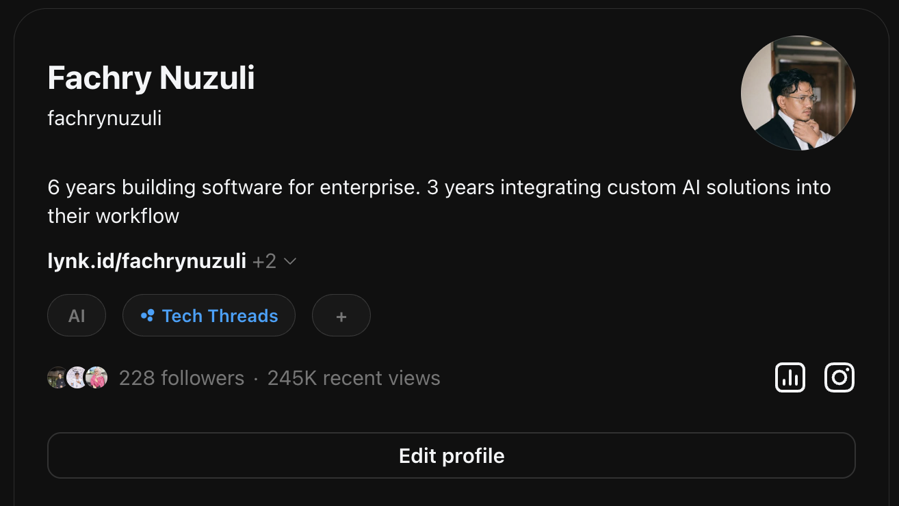

Fachry Nuzuli · Juni 2026
Topic: ChallengeJuni
Apa ini?
Challenge Juni adalah tantangan posting 30 hari di Threads. Satu post per hari. Satu hal yang kamu pelajari, coba, amati, atau sadari di hari itu.
Topiknya bebas. Panjangnya bebas. Formatnya bebas. Yang tidak bebas: skip setiap hari.
Terinspirasi dari MayLearnings yang diinisiasi @narawastu pada Mei 2024, Challenge Juni adalah versi Juni-nya. 30 hari, spirit yang sama.
Aturan Main
Inspirasi Topik
Ini bukan template wajib. Ini pintu masuk untuk hari-hari yang rasanya "gue ga belajar apa-apa hari ini."
Mau versi lengkapnya biar gampang dibagikan ke orang lain?
Baca panduan lengkap Challenge Juni di NotionTidak perlu form. Tidak perlu DM dulu. Langsung posting di Threads.
ChallengeJuniLangkah-langkah
FAQ
Harus posting setiap hari tanpa terkecuali?
Idealnya iya. Tapi ini bukan ujian. Skip satu hari, lanjut besoknya. Yang penting tidak nyerah di tengah jalan.
Post-nya harus panjang?
Tidak. Satu kalimat cukup. Tiga paragraf juga boleh. Format bebas, panjang bebas.
Boleh pakai bahasa apa saja?
Bebas. Indonesia, Inggris, campur, Jawa, Minang — semua boleh. Asal bisa dibaca manusia.
Ada hadiah atau sertifikat?
Reward utamanya adalah konsistensi dan koneksi yang lo bangun sepanjang bulan ini. Tapi siapa tau ada surprise di akhir.
Temanya harus soal belajar formal?
"Belajar" di sini artinya luas: observasi, trial and error, kejadian, percakapan. Apapun yang bikin lo lebih paham sesuatu.
Boleh mulai di tengah bulan?
Boleh. Late join lebih baik dari tidak join. Posting dari hari masuk lo sampai 30 Juni.
Tentang Penggagas
